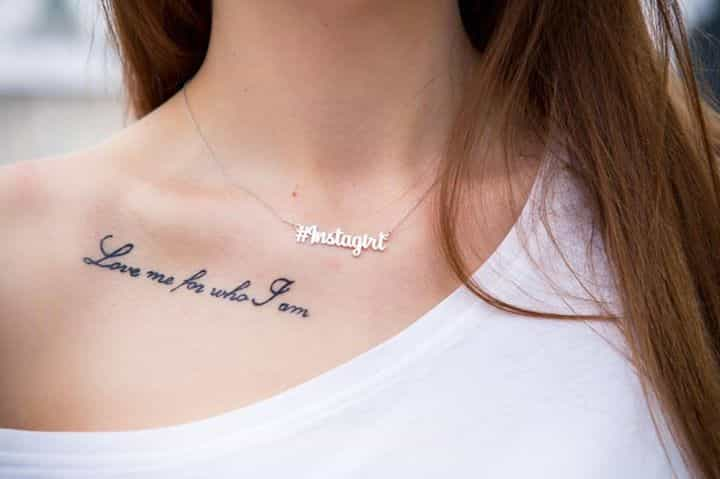

Daryush "Roosh" Valizadeh created ROK in October 2012. You can visit his blog at RooshV.com or follow him on Twitter and Facebook.


This article was originally published on Roosh V.
I’ve recently written of my intense disappointment in returning to a country in which the women and culture are becoming more like what we have in America. Here are six negative changes I’ve noticed in Poland since my first visit in 2011:

Young men and women are disfiguring themselves with the typical sort of tattoo scribbles that is already epidemic in America. Polish people are deciding to pursue their individualist side by permanently drawing obnoxious things on their body instead of actually achieving something worthwhile that makes them superior to the common man.
Tattoos are tame compared to the sudden, prevalent, and frankly shocking use of ear gauges, whereby people irreversibly stretch and mutilate their ear lobes to appear cool. While it’s possible for the occasional tattoo to look good, ear gauges never look good, and make it seem like the victim is hoping to gain membership in a backwards jungle tribe that has yet to encounter electricity. Since tattoos and ear gauges go hand in hand, you can only imagine the freakshows Poland now has on display.
Displaying your homosexuality used to be culturally forbidden and even dangerous in an former Soviet satellite like Poland, but you’re starting to see an increase in guys who are gay, proud, and loud. Just last month for the first time in Eastern Europe ever I saw two men passionately kissing in front of a pizza shop. If what’s happening on USA soil is any indication, being gay in Poland will soon be seen as hip, trendy, and progressive. Both men and women will experiment with it, as if catching a sort of virus, and step back from more traditional and humanizing features of Polish culture that have historically been centered around religion.
The only country I had to do the ‘vomit slalom’ was Iceland. This is where I had to look down while walking around the club district at night during the weekend so I didn’t step in vomit because of how common Icelanders puke on the street. This didn’t use to be needed in Poland, but now it does.
Both men and women are competing to consume near-lethal amounts of alcohol while partying. This is so consistent, especially among the men, that a good way I display value to women is to simply be sober at 3am and speak in complete sentences without slurring or swaying my body, but now even girls have so taken to drink that it’s getting harder to have normal conversations with them in night venues than in the recent past.

The technology virus has infected Poland. Most Poles who own a smartphone are unable to endure a minute or two of downtime without obsessively checking something on their phone or distracting themselves with music. A girl who would normally look up to the person who walked into the room is now looking through her Facebook account or playing a silly game, oblivious to her surroundings. While girls don’t yet have multiple online dating accounts, that’s just a matter of time.
Human interaction in Poland is being steadily replaced by technology that has America’s narcissistic and brain-dead ways of behaving built right into the device. No formal learning required.
Polish women have always been feminist in that they wanted their own career alongside family, but now they are throwing family under the bus. I’ve begun noticing Polish girls shaming their friends who decide to get married early, something you would never see in Ukraine and Russia.
Even worse is that I’m encountering a lot of Polish girls who speak of long-term travel and “Euro trips.” While it’s possible for men to find themselves through travel, the only thing a girl finds is exotic cock. Polish girls are racing to become corporate whores at the same time they’re becoming actual whores for sexy Mediterranean men who spit a smooth game.
What amazes me is the speed at which a culture can degrade. I was so unsure that the observations above were objective that I had to discuss them with other men to be sure—both Polish and foreign. They’ve confirmed that the changes I’ve seen are really occurring, that Poland is adapting the worst of the West and that there isn’t much to be done about it. The women will lead the way to the bottom and the men will have no choice but to keep up with them in order to squeeze out the last drop of genuine intimacy left before Western degeneracy crushes them completely.
There is no stopping the decline of the sort that Poland is experiencing. It’s too hard to change the minds of a large percentage of the population who have been deceived in thinking that the West’s soulless value system is their path to happiness and riches. When they approach the end of the rainbow they’ll be surprised to find that there is no pot of gold, and that they’ve lost what can never be regained.
Read Next: 13 Personality Traits Of Polish Women